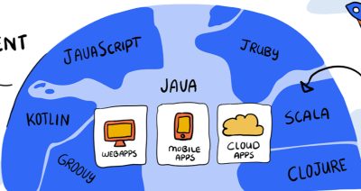

Java is used in many real-life applications because of its stability and performance.
Examples include:
Android apps
Banking and financial systems
Web servers and cloud-based systems
Enterprise software
Embedded systems

Advantages of Java
Easy to learn and use: Java is simpler to write and understand
than languages like C++. It handles memory automatically, which reduces complexity for programmers.
Distributed language: Java supports building applications that work across multiple
computers using technologies like RMI.
Secure: Java does not use explicit pointers and includes built-in security features
to control access to resources.
Automatic memory management: Java automatically manages memory and removes unused
objects through garbage collection.
Multithreaded: Java allows multiple tasks to run at the same time, improving
performance
and efficiency.
Disadvantages of Java
Slower performance: Java can be slower than low-level languages because it uses more
memory and runs on the JVM.
High memory usage: Java applications often require more memory compared to languages
like C or C++.
Slower startup time: Java applications may take longer to start due to JVM
initialization.
Limited low-level control: Java hides hardware-level details, making it less suitable
for
system-level programming.
Garbage collection pauses: Automatic memory cleanup can cause delays, affecting
performance in real-time applications.